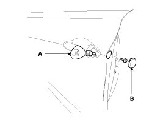
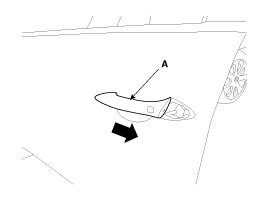
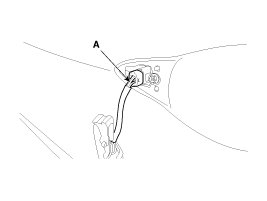

Front Door Exterior Handle: Service and Repair
Replacements
Outside Handle Replacement
1. Remove the front door trim.
2. Remove the hole plug (B).
3. After loosening the mounting bolt, then remove the outside handle cover (A).
Tightening torque:
0.7 - 0.5 N.m (0.07 - 0.1 kgf.m, 1.0 - 0.7 lb-ft)

4. Remove the outside handle (A) by sliding it rearward.

5. Disconnect the outside handle connector (A).

6. Installation is the reverse of removal.
NOTE:
- Make sure the door locks/unlocks and opens/closes properly.
- Make sure the door locks and opens properly.